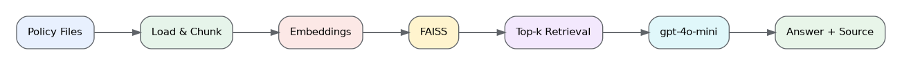

Answer support questions using retrieved evidence from local policy documents.
Fast Memory Flow

What I Built
I built a two-step RAG pipeline over local support policies. It loads and chunks documents, creates embeddings, indexes them in FAISS, retrieves the top relevant chunks, and asks gpt-4o-mini to answer only from that evidence with source attribution.
Think Summary
How do chunk size and top-k affect retrieval?
Small chunks improve precision but may lose surrounding context.
Large chunks preserve context but consume more tokens and may include irrelevant text.
A larger top-k improves recall but can add noise and cost.
Retrieval and generation should be evaluated separately.
Interview Q&A
What is RAG?
RAG retrieves relevant external evidence and supplies it to the model before answer generation.
Why are embeddings needed?
Embeddings represent semantic meaning as vectors, enabling similarity search beyond exact keywords.
What is the role of FAISS?
FAISS stores vectors and finds document chunks that are most similar to the question.
30-Second Interview Answer
I built a two-step RAG pipeline over local support policies. It loads and chunks documents, creates embeddings, indexes them in FAISS, retrieves the top relevant chunks, and asks gpt-4o-mini to answer only from that evidence with source attribution.
One-Line Résumé Description
Built a source-grounded LangChain RAG pipeline using document chunking, embeddings, and FAISS.
Read-Aloud Practice
What I built
I built a two-step RAG pipeline over local support policies. It loads and chunks documents, creates embeddings, indexes them in FAISS, retrieves the top relevant chunks, and asks gpt-4o-mini to answer only from that evidence with source attribution.
What is RAG?
RAG retrieves relevant external evidence and supplies it to the model before answer generation.
Why are embeddings needed?
Embeddings represent semantic meaning as vectors, enabling similarity search beyond exact keywords.
What is the role of FAISS?
FAISS stores vectors and finds document chunks that are most similar to the question.
Résumé description
Built a source-grounded LangChain RAG pipeline using document chunking, embeddings, and FAISS.